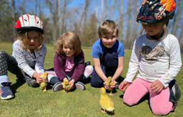
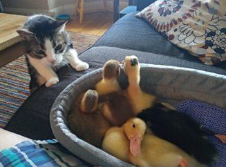

| (Frequently Asked Questions)
|
Our ducks may be purchased by another farmer right away. Like all livestock, we are not allowed to tell clients what they can or can’t do with a new farm friend. People use them for insect control (ducks love to eat garden bugs and mosquitos), some like the friendly nature and have them as pets and some continue to grow them to full size.
We keep a few to "grow out" and fully feather so we can assess them for our breeding program.
We love taking our Farm Critters on the road for events, parties and school visits. We take your ducks along with our other miniature farm friends. Kids of all ages (that’s grown-ups too) get to hold and cuddle the animals.
While they are with you, we know you’ll have a duckie time and build joyful memories during your feathered friend time. We get asked "Will my ducks will be processed as food?" While ducks are on our farm, we provide them with a super life with our pond and other friends to swim and play with. We don’t process ducks or eat duck at Woolley Wonderland Farm.
|
Ducks poop … a lot. Every 15 minutes apparently. Fecal matter can be runny or lumpy depending if it’s Duck Poo or Duck Pee. Duck feces is directly related to what they have eaten, as they have a fast metabolism. What goes in comes out relatively quickly. Their poop will reflect what they eat. Do not panic if a tomato just eaten turns the poop a strange colour.
Birds have 3 types of feces...Urates are the nitrogenous waste, are white, related to the amount of protein metabolized and variable of the amount in any defecation. Cecal feces tend to be liquid and smelly from the cecal fermentation and not related to recent diet. Intestinal feces are the undigested food.
To minimize mess you can: keep them in their brooder, use a kiddie pool (dry) with shavings in the bottom for controlled indoor space. When they start to jump over the edge, you can build cardboard sides or fashion a gate around the pool with chicken wire. You can follow ducks around with a disinfectant wipe!
You can actually make Duck Diapers from small socks with a maxi-pad or other absorbent insert. Here's a few links with fun info:
- Ducks in homemade sock diapers
- More questions and answers about duck diapers
- Duck diapers and how to make them
No matter how you manage the poo, you must & keep those kiddos little fingers out of their mouths. We have a that is handed to every client at pick up. It’s that important to us!
The ducklings need to be kept in a very warm environment for the first week.
There are a couple good ways to provide that heat. You can keep their bin in front of a wood stove. The easiest way is to use a heat lamp that is positioned over their bin or cage. It stays on 24/7 for the first week. It can be used for nights in week 2 and then usually isn’t required after that.
You may not need to rent one of our heat lamps if you have a desk lamp that can hang over the duck enclosure. The lamp must use an old-fashioned incandescent bulb of 60 -100 watts. Old style incandescent bulbs can usually be still purchased at a dollar store. They can’t be LED or CFC. Heat must be produced.
You will suspend or hang the lamp at one end of the duck enclosure (so that the ducks could move away if too hot). It would be at a height about the top of the tote for the first week. If ducks pant or stay away from the heat source, they are TOO HOT. If ducks are cuddling and in a corner near the heat source, they are TOO COLD. Adjust the height of the heat lamp accordingly.
Our manual has tips on what to watch for and when to change the height of the lamp. Some of our mini ducklings may need heat for 4 weeks.
|
Pekin ducks lay huge eggs and are in demand for egg production. Thanks to you, the kind-nature and friendly disposition of the ducks make them fine farm friends! They are great bug-eaters and they don’t fly away.
Other breeds may look like stretched out penguins and won’t fly but are super bug eaters in gardens. These are Indian Runners. Did you know some ducks can be agility trained through a Ninja Course for Ducks? Why not see what YOUR duck can learn with a bit of food and your training!
There are tiny Call Ducks that won’t grow bigger than a 3-week old standard duck. These are in high demand for shows, fairs and exhibitions.
for you to select your breed of duck as we do not know in advance what new babies will be hatched and available on any given day.
|
Your kit includes with a bucket of duck food that should last 3-4 weeks. Did you know they like scrambled eggs for breakfast? It’s full of protein. You can also give them Duck Treats! For more information, check out this great link:
The ULTIMATE list of DUCK Treats and Supplements
|
It’s a weather and temperature thing. The small duckies can visit outside in the warmth of a late spring, summer or fall day. Fully feathered ducks (at 8 weeks) can live outside in the snow! At your home, they must be supervised when they are outside and we do not recommend they have any cage to be left overnight.
Grassy yards are ok as long (again, under supervision) with no chemical pesticides or fertilizers in use. Ducks will run about, dig in the dirt for bugs to eat and lay in the sunshine too. Your new feathered friends will move very fast and can sneak under your legs (or bottom if raised from a sitting position). KNOW where your ducklings are as you move about. Move slowly. Chasing them will cause them to run. Walking will generally cause them to follow you.
What is a nice day for ducks? Ducks will play in the rain (or a gentle sprinkle of water from a hose). If the sun is shining, and there is no strong wind, it will be ok for the ducklings when small. As they grow, they are able to produce more warmth and feathers keep them warm as well. Watch the ducks for shivering or cuddling if you think they are getting cold.
If you want them to swim outside, it should be the last thing duckies do before returning inside. They should be warmed (perhaps use a hair dryer) to get their core body temperature back up to normal. They'll be tired and sleep after such an outing.
|

Any predator is worth keeping a watchful eye for. Neighbourhood cats are known to grab and run, crows take out ducklings as will foxes, raccoons, fishers, minks, and more. Hawks and flying predators may also make a surprise appearance in the city.
|
Sadly, we have had a couple of "oops" moments where a duckling has perished while with clients. Some got chilled & died or were squished accidentally when they moved so fast & got under foot or a pet or predator got them. . If they perish, you can bury them. If the single duck remaining is too sad (or you are), feel free to bring the solo friend back to the farm early. It happens. We can sometimes provide another friend for the solo duck too. We have chatted with kiddos who are grieving to make them feel better. to help you through the episode.
|

You know your pet, and we know you want the ducklings and your pet to be safe. As our ducks are not sabre-tooth versions, you will need to be their protector. If you are not certain of how your pet will react, have a rabbit cage as a house for the ducklings. It will save you from having to put the ducklings behind closed doors.
We have seen lots of great photos of dogs and cats with our ducklings.
Have fun but be aware and take care.
|
Some clients have salt water pools.
Some have Koi ponds.
Some have kiddie pools.
Some have chlorinated pools.
Some have hot tubs.
The first question is: do you want duck manure in your pool? They poop every 15 minutes.
The Second question is: will this be a good environment for the duckling? Chlorine is not good for a duckling. We would say a big NO to pools with chlorine. Hot tubs will be toooo hot.
Ducks eat fish. In fact, you can buy little feeder fish and put them in a kiddie pool to watch the ducks swim and try to catch them if you’re up to it!
We’d say NO to the Koi pond for the sake of the fish.
Bathtubs, kiddie pools, basins and kitchen sinks are great swimming places!
Ducks must always be supervised near water and never swim for too long during the first week as they will get water-logged.
It’s a good idea to dry-off with a hair dryer on low to get their body temperature back up for the first weeks. Later, as ducks get bigger it’s not so much an issue.
There is a little oil glad that will develop on the duck’s back near the tail. (Some may mistake this for a wound.) The motion of a duck rubbing its beak in this area promotes the secretion of oil and the spread it over their feathers to waterproof. Mama duck shares her oil when they are small, before the duck develops its own glad.
|
When you get your notice of your pick up date by email, you will get a PDF with protocols for arrival, as well as a map with specific directions.
Upon arrival, you will drive up the laneway to Woolley Wonderland Farm.
On Spring Duck Days, there may be a line-up of cars. Please wait in your vehicle, moving up with the line. It won’t take very long. We have a team on site who will greet you.
When approached by our team member, let them know that you are here to pick-up your foster duckling kit. If you have an urgent washroom need, let them know as and they will direct you to "the facilities" right away.
. In the spring & summer we have varying . Staff will meet you near our garage and direct you to back up to one of the bays. You will tell them the name the order was placed, hand them your duckie box for the trip home and someone will prepare your ducklings.
Meanwhile, you will get out of your vehicle to load your kit items into your vehicle. a large bale of shavings, a bag or bucket of food weighing approx. 12 kg. and our "loot bag" with your instruction manual, food & water dishes as well as the "duck gatorade". If you ordered a HEAT LAMP, BIN or CAGE we will get that for you as well.
If you forgot to order a heat lamp, we can take your payment on the spot and loan one to you.
and a draft-free area so it is important to get them into your vehicle immediately. If you have time, you may be able to pull aside and say hi to the animals in our paddocks. We find the excitement level is very high and visiting may be better for the return visit. (It also helps distract from sadness that may occur.)
|
Our staff will meet your vehicle and direct you to the correct zone. On Duck pick up Days, there may be a line-up of cars. Please wait in your vehicle. Let our helper know that you are dropping off and you will bypass any lineup and go right to the returns area.
We have an area we’ve nicknamed the (after the figure skating finish area). In warm weather, your ducks will join their cousins in our outdoor pen to start their welcome back. Our pond is set up and secure, where the majority of ducks will live while on the farm.
will have a hard time saying good-bye. Please take the time to make them feel good about the end of this experience. Take the time to two to visit our other animals along the electric fence as well. It can take their mind off of the potential sadness and remind them that ducks belong on a farm. Let us know if we can help and talk with them. We may be busy, but this transition is important to us too. We have shared stories and tears with grown-ups and children. The ducks must come back to the farm.
|
We are often asked if you can tell if the sex of the ducklings when they get picked up. It is almost impossible to tell when first hatched.
Later on, as the peep turns to a quack, it becomes more evident. For most breeds we have, the quack will be raspier and quieter on a male, whereas the females are generally louder.
Male ducks will develop a curl on their tail as well. Ducks won’t mind if they have a name that may be associated with a girl if you later discover it’s a boy. Mature drake (boy) ducks have a Curly Tail Feather.
|
Our foster program is currently set up with most clients coming to the Woolley Wonderland Farm in Lakehurst to get their kit. Our farm is 90 minutes from the Don Valley and 401 area. For a no-contact delivery, the cost depends on your location. We can provide a delivery service for our fee of $1.15 per km plus applicable tolls and taxes. , please email Karen@CritterVists.ca.
|
This is one of the top MOM questions. Ducklings can live in the cage or tote quite happily. The experience of fostering ducks promotes interaction with them. Ducks poop every 15 minutes. Small duck = small poop. Older & bigger ducks = bigger poops. The bale of shavings we provide should typically last a month of tote/cage cleanings. If you wish: order an extra bale. Some people change the bedding more than others and we can provide the shavings at a better cost than the pet store.
At the farm, we put a thin layer of shavings in the bottom of the tote. Water is what causes most of the odour when mixed with the poop. By keeping the bedding dry the smell tends to be minimized. You can put the water dish we provide inside a larger, low brownie-sized pan or plastic container to better keep the water in one area.
Top-off the bedding with a thin layer to the base once or twice a day as the poops appear.
Every 3 days, we empty the entire cage or tote into the compost, wash the tote or cage bottom out and add new shavings.
Taking the ducklings outside on warm spring, summer and fall days allows them to have fresh air (and poop on the grass. Rain will wash this manure into the lawn and it will help fertilize for you.)
No matter what your set up ... for the health of your family. Be aware, take care.
|
One of our favourite resources is the website Backyard Chickens.com
Go to the link below and search around for symptoms you may see on your duck.
Common names for leg issues to search for are: splayed leg, sprained leg, broken leg or not walking right
https://www.backyardchickens.com/forums/ducks.42/
|
Fast fix for a scratch or small wound is putting corn starch or Blood Stop (if you have it for a rabbit or other pet) to stop the bleeding.
Ducks can scratch their beaks, feet or other body parts but know that they generally heal quite quickly.
|
All of the ducks we foster are hatched in an incubator and won’t know a mother duck. You became the surrogate mom!
Ducks will imprint, or focus their attention on you as the care giver while in your care. They will follow you around and look to you for food and cuddles.
Once they return to the farm, they quickly integrate into the flock and will always remember to enjoy cuddles and gentle touch. This makes them superb pets for others to eventually own.
|
Like your usual household pets, ducklings don’t need constant watching. Baby ducks will sleep in the cage or bin, under the warmth of the heat lamp, with food and water nearby for snacks. They peep when awake and chat to each other.
They love to be talked to (even in their enclosure) and respond to voice and touch.
You can go away overnight and they will be fine with food and water in their enclosure as well.
without checking on them. Never leave them in water without watching over them.
Our ducklings will not fly until they are 3 months old or more. Most breeds we are fostering may flutter their wings but will never truly fly away.
|
Most ducklings double in size in one week and again in the second week. You will be amazed at how fast they grow-up. Weigh them and measure them as part of a science project! As they grow, they will require more food and water but less heat. They will tell you what they need with their actions as they search for food and move towards or away from the heat source.
Observe and react!
|
| |
| Copyright - Critter Visits & Woolley Wonderland Farm 2015 - 2020 |
|